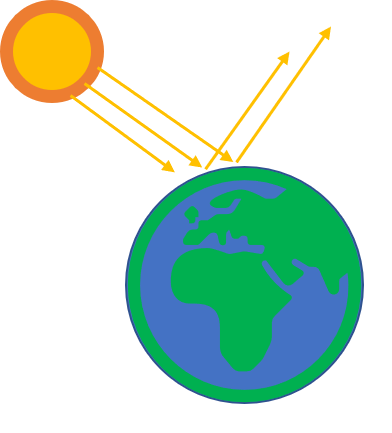

Generelle informationer om Mars

Mars er den 4. Planet i vores solsystem og kaldes også for den røde planet. Farven skyldes mineralet hæmatit, som igennem nogle oxidationsprocesser skiftede farven fra sort til rødt. Selvom menneskerne ikke endnu har været på Mars, ved vi alligevel en masse om planeten. Nedenfor kan du se nogle vigtige data om Mars i sammenligning med jordens data:
| Fysiske egenskaber | Jorden | Mars |
|---|---|---|
| Diameter | 12.745km | 6792km |
| Masse | 5,97x1024kg | 6,4x1023kg |
| Tyngdeacceleration | 9,8 m/s2 | 3,69 m/s2 |
| Gennemsnitlig temperatur | +14°C | -63°C |
| Atmosfære-sammensætning | 77% N2, 21% O2 og 1% Ar | 95,32% CO2, 2,7% N2 og 1,7% Ar |
| Rotationstid | 23t 56min og 4sek | 24t 37min og 23sek |
| Omløbstid omkring solen | 365,26 døgn | 686,96 døgn |
| Gennemsnitlig afstand til solen | 149,6 mio. km | 228 mio. km |
Sammenlignes f.eks. jordens tyngdeacceleration med Mars’, så udgør Mars kun ca. 37% af jordens. Denne forskel i tyngdeaccelleration kan observeres, hvis du vejer dig på en badevægt på jorden og den viser 100kg, da vil den samme badevægt på mars kun vise 37kg. En anden væsentlig forskel er gennemsnitstemperaturen. På mars ligger gennemsnitstemperaturen på -63°C, hvilket er betydeligt mindre end på jorden. Denne forskel skyldes planeternes forskellige afstand til solen. Mars ligger 228 mio. km fra solen. Med denne afstand ligger Mars lige på kanten af den såkaldte ”beboelige ”-zone, som kort fortalt går ud på at vand kan være flydende. Men også dens atmosfære og drivhuseffekten spiller en betydelig rolle. Lige som i et drivhus, hjælper atmosfæren med at holde en planet varm. Desværre har Mars kun en tynd atmosfære, da dens masse ikke kan fastholde atmosfæren. Forholdene på Mars spiller en vigtig rolle for menneskeheden, da SpaceX og andre rumfartsorganisationer har planlagt at kolonisere den. Andre bemærkelsesværdige informationer om Mars er dens to måner, Phobos og Deimos:
Månen Phobos ligger kun 9235,6km fra Mars, og vil indenfor 50 millioner år, enten styrte ned på Mars, eller gå i småstykker. En anden spændende fact er den største vulkan på Mars. Med omkring 22km er Olympus Mons den største vulkan i vores solsystem og dermed ca. 2,5 gange så stort som Mount Everst på jorden.
Albedo effekten

Albedo fortæller os noget om et legemets effektivitet til at reflektere lys. Hvis du f.eks. lyser med en lommelygte på et objekt, kan du observere objektet, da det reflekterer lyset ind i dine øjne. Sne f.eks. har en stor albedo, da en stor del af lyset kastes tilbage. Albedo-faktoren antager værdier mellem 0 (intet lys reflekteres) og 1 (alt reflekteres). For planeter afhænger faktoren til største del af deres overflade. For neden kan du se albedo-faktorer for forskellige overflader:
| Overflade | Albedo |
|---|---|
| Havoverflade | 0,035 |
| Lava | 0,04 |
| Månen | 0,12 |
| Mars | 0,15 |
| Jorden | 0,37 |
| Sne | 0,80-0,85 |
Kosmisk stråling
Udenfor jordens atmosfære er universet fuld af stråling. Kosmisk stråling kan opdeles i tre kategorier.
Partikler som er fanget i jordens magnetfelt, partikler som igennem et soludbrud bliver skudt i rummet,
og galaktisk stråling, som er energirige protoner/ioner der kommer fra steder udenfor solsystemet.
Udenfor jordens beskyttende atmosfære bliver astronauter udsat for en mængde af denne stråling,
som f.eks. øger sandsynligheden for sygdomme såsom kræft. Milli-Sievert (mSv) er en form for at måde
intensiteten af denne stråling. F.eks. bliver et menneske indenfor et år udsat for 2,1 mSv per år.
Astronauter bliver udsat op til ca. 4000 mSv per år i rummet (med beskyttelse!).
For at sammenligne denne dosis, kan der kigges på menneskerne i Tjernobyl-ulykken.
Arbejderne der døde indenfor en måned blev udsat for 6000mSv!

Hohmann-banen
Når man sender rumskib afsted fra Jorden, vil dens fremadrettede hastighed sammen med tyngdekraften fra jorden få skibet til at rejse i en krum bane.
Når rumskibet rejser mod en anden planet, vil tyngdekraften fra denne planet også påvirke hvilken bane rumskibet tager.
Desto mere rumskibet kan udnytte tyngdekraften til at komme frem til destination med motoren slukket, jo lavere er missionens omkostninger.
Tidevandskræfter
Den gennemsnitlige afstand mellem centrum af Jorden og af Månen er 384405 km. Tidevandskraften kan illustreres ved et eksempel. Når Månen kredser omkring Jorden, påvirkes hver klode af den anden klodes tyngdekraft, og tidevandskraften fremkommer, fordi legemerne har så stor diameter, at der er væsentlig stærkere tyngdepåvirkning i den side af legemet, som vender mod den anden klode end i den side, der er længst væk.
Roche-grænsen
Roche-grænsen er den afstand mellem en måne og en planet, hvor tidefeltet fra planeten præcis ophæver månens egen tyngde. En sten på månens planet-nære (eller planet-fjerne) overfladepunkt vil svæve, når månen befinder sig ved Roche-grænsen. Er månen tættere på planeten end Roche-grænsen, vil månen langsomt blive revet i stykker for til sidst at danne en planetar ring omkring planeten.
En god aproximation for Roche-grænsen kan beregnes ud fra planets masse M, radius r for månen og månens masse m: For jorden og månen ser beregningen således ud: Månens radius r = 1.737km, månens masse m = 7,349 · 1022kg, og jordens masse M = 5,972 · 1024kg.
Speciel Relativitetsteori
Lyset bevæger sig altid med konstant hastighed. I fysikken bruges for lysets fart konstanten c = 299.792.458 m/s.
Intet kan bevæge sig hurtigere end lyset. Hvis lys bevæger sig i et rumskib som også er i bevægelse,
vil lys stadig har den samme fart! Se figuren nedenfor: